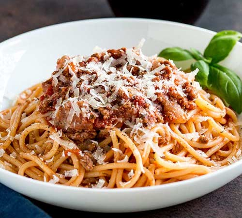

Pasta Bolognese

- Cook: 1 hr 25 mins
- Total: 1 hr 35 mins
- Prep: 10 mins
- Servings: 4
Description:
An excellent chunky pasta sauce with beef, pork, lots of vegetables and tons of flavor. Freeze any unused portions for later use.
If you have fresh herbs, you may substitute 2 teaspoons chopped fresh basil for the dried basil in this recipe.
Ingredients:
- 2 tablespoons olive oil
- 100g sliced bacon
- 1 onion, minced
- 1 clove garlic, minced
- 600g lean ground beef
- 300g ground pork
- 300g fresh mushrooms, sliced
- 2 carrots, shredded
- 1 stalk celery, chopped
- 1 can plum tomatoes
- salt and pepper to taste
- 1 kg pasta
Steps:
- In a large skillet, warm oil over medium heat and saute bacon, onion and garlic until bacon is browned and crisp; set aside.
- In large saucepan, brown beef and pork. Drain off excess fat. Stir in bacon mixture, mushrooms, carrots, celery, tomatoes, tomato sauce, wine, stock, basil, oregano, salt and pepper to saucepan. Cover, reduce heat and simmer one hour, stirring occasionally.
- Bring a large pot of lightly salted water to a boil. Add pasta and cook for 8 to 10 minutes or until al dente; drain.
- Serve sauce over hot pasta.